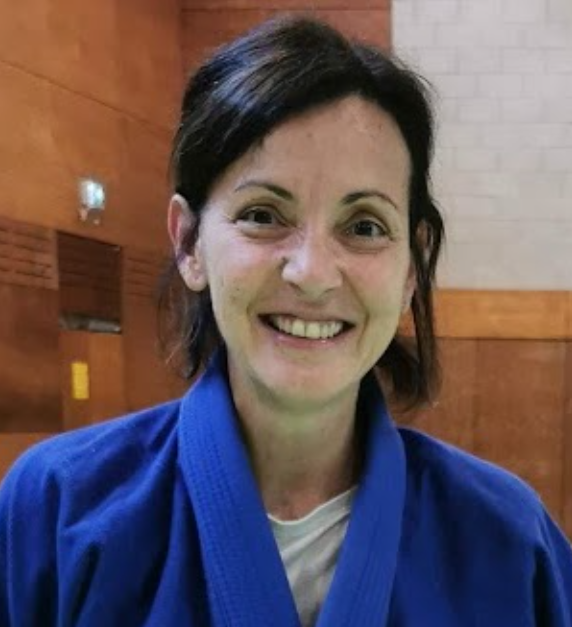
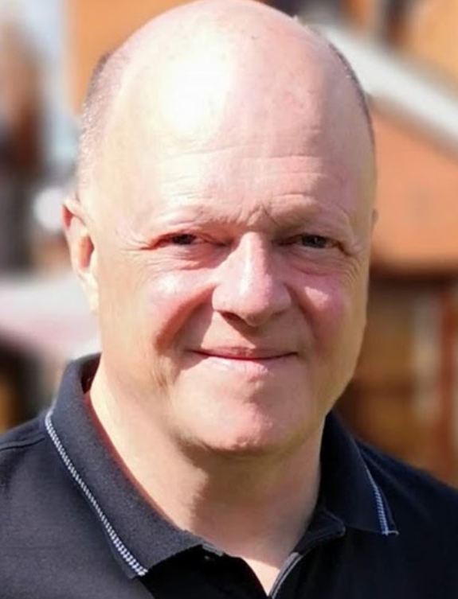
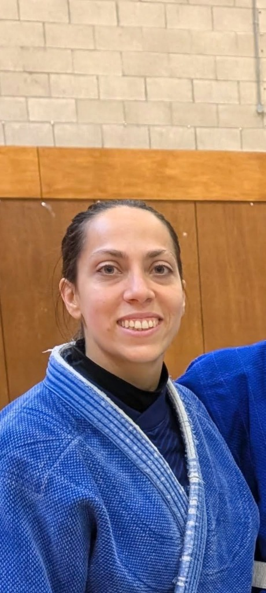
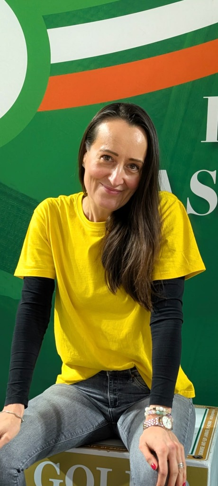

Alonzo Henderson
Head Coach (L2) • 6th Dan OLYAlonzo has been practicing judo for the past 60 years as a competitor at national, international and Olympic level in the 1980 games in Moscow, and over the past 30+ years as a coach in schools, clubs and Universities in the greater Dublin area.
Alonzo established the Cabra club in 2011 with a view to introducing children to the practice and values of judo. The club also offers classes for adults including beginners.
Alonzo is a qualified Level 2 (L2) Coach certified by Sport Ireland and the Irish Judo Association.

Nevenka Fernandez
Assistant CoachNevenka is a native of Ponferrada in Spain and is the latest member of our judo coaching staff with a particular focus on judo for women and girls.
At age 15 in 1989, she became the Spanish Junior Champion (under 42 Kg) and joined the National Team, including the Pre-Olympic Team for Barcelona '92. Although she chose to start University and step back from professional competition instead of competing in Barcelona, she spent several years training and competing alongside the national team with amazing women champions like Miriam Blasco and World Champion Isabel Fernandez.
Her dynamic coaching style encourages female participation across all grades, focusing on agility, technique, and confidence building.
Nevenka is a qualified Level 2 (L2) Coach certified under national sporting standards.

David Moloney
Assistant Coach (L2) & SecretaryDavid is the club secretary and assistant coach of Cabra Judo Club. He oversees day-to-day club operations, member communications, and technical coaching assistance.
David is a qualified Level 2 (L2) Coach actively involved with both junior classes and squad training.

Mary McDonald
Children's OfficerMary is the go-to person for any matters involving children in the club. She ensures that young athletes have an enriching, positive, and safe environment to train and compete.
Our Volunteers
Dedicated athletes and club members supporting classes and coaching across our Dublin training venues.

Volunteer AssistantAri (Ariadna Garcia Castro)
Ari is a valued volunteer with Cabra Judo Club, assisting coaches and supporting students on the tatami during our classes in both Citywest and Cabra / Lindsay Road.
Originally from Madrid, Ari brings tremendous competitive experience to our club. She has competed extensively in Spanish national championships and cups, including the Senior Spanish National Judo Championships (-63kg division) and the Spanish Cup in Jaca. Her technical agility, positive energy, and mentorship inspire our young judoka and squad members alike.

Mindset & PsychologyAga Seliga-Moloney
Aga is a Dublin-based psychologist and executive coach with over 15 years of professional experience across corporate, non-profit, and coaching environments. She works primarily with individuals and organisations, combining psychological expertise with mindset coaching.
As our volunteer mindset and sports psychology coach, Aga supports our judoka and coaching staff with mental preparation, focus, resilience, and competition mindset techniques on and off the mat.